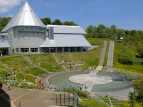
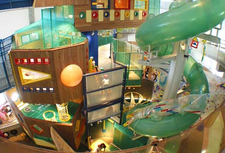

いわてこどもの森


奥中山地区の美しいブナ林に囲まれたいわて子どもの森は、
「楽しさ」「感動」「発見」をとおして子どもの主体性や
自立性を育む体験型の児童館です。広大な敷地内に、屋外の
遊び場やキャンプ場、屋内の遊び場があり、子どもも大人も
ゆったりと楽しむことができます。
観光情報
ジャンル : 観光スポット
所在地 : 岩手県二戸郡一戸町奥中山西田子1468-2
電話番号 : 0195-35-3888
定休日 :
休館日は火曜(火曜が祝日の場合は翌日休館)
年末年始(12月29日～翌年1月3日)
その他年4回の整備休館あり
営業時間 : 9時～16時
(現在、新型コロナ感染拡大防止のため短縮中)
料金 : 入場無料
[アクセス経路]
ルート1:【盛岡方面】 滝沢ICから40km（国道4号線・車で55分）
ルート2:【二戸方面】 一戸ICから28km（国道4号線・車で40分）
ルート3: IGR奥中山高原駅より岩手県北バス「いわて子どもの森」行き